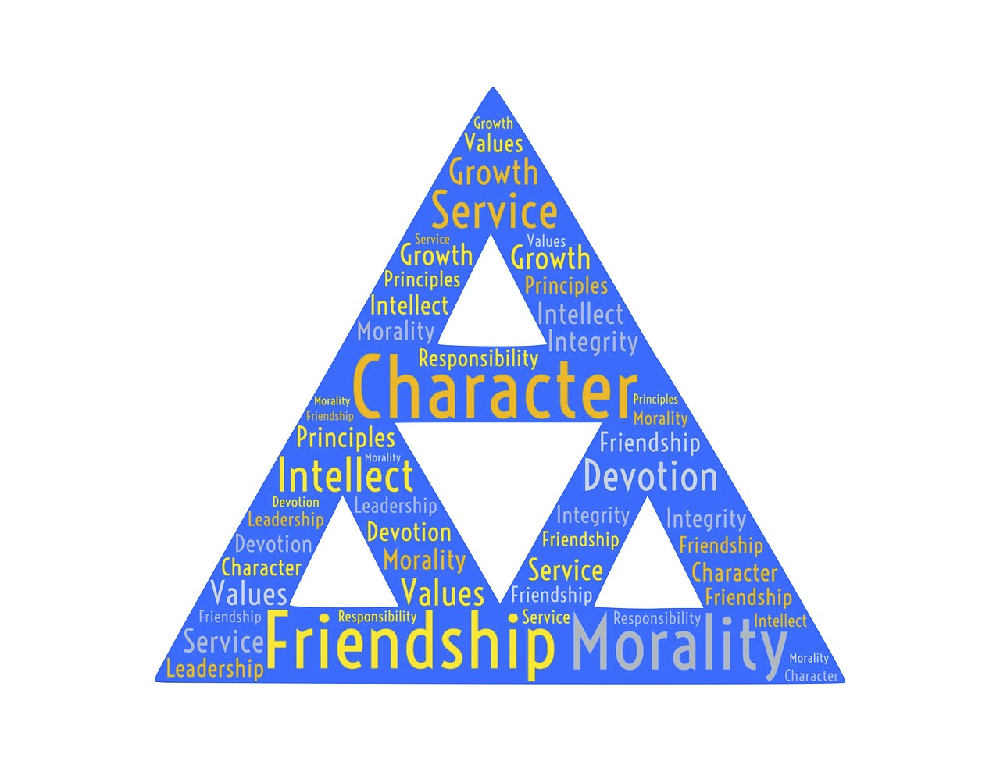

How It All Began
Tri Delta's story starts in 1888 at Boston University, at a time when women on college campuses were still a rarity. Seniors Sarah Ida Shaw and Eleanor Dorcas Pond felt that the existing women's societies on campus didn't reflect what they valued most, so they set out to build something different: an organization that would be “kind alike to all” and care more about a woman's inner character than her outward appearance. Along with Florence Isabelle Stewart and Isabel Morgan Breed, they wrote Tri Delta's rituals and constitution and designed its emblems from scratch. On Thanksgiving Eve of 1888, the founders embraced and declared, “Tri Delta is founded.”
(Source: https://www.tridelta.org/our-story/history-and-archives/)
Growing a Sisterhood
What started as a handful of women in Boston grew quickly. Within a year, Tri Delta already had chapters in three different states, and by 1900 the sorority had expanded to 18 collegiate chapters, including its first chapters in the South and on the West Coast. Today, Tri Delta has grown into one of the largest women's fraternities in the country, with 141 active collegiate chapters and more than 300,000 women initiated over its history.
Our Colors & Symbols
Every Tri Delta learns her sorority's symbols early on, and they show up everywhere from our jewelry to our merchandise. Our colors are silver, gold, and cerulean blue, and our symbol is the stars and crescent. Our flower is the pansy, our jewel is the pearl, and our mascot is the dolphin — a nod to our patron Greek deity, Poseidon. Our official publication, The Trident, has been connecting members since the sorority's earliest years.

The Omicron Chapter at Syracuse
Our chapter here at Syracuse University, chartered as the Omicron chapter, has carried Tri Delta's traditions on the Hill for well over a century. Being part of one of Syracuse's oldest and most established Greek organizations means being part of a long line of women who've walked these same quad paths, lived in the same chapter house, and upheld the same values our founders wrote down back in 1888. As a current member, getting to add my own chapter to that history — through the friendships I've built, the events we've run, and the philanthropy work on the next page — has been one of my favorite parts of college.
(Source: http://www.sutridelta.org/)